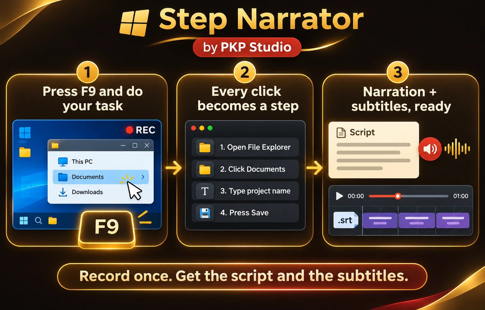
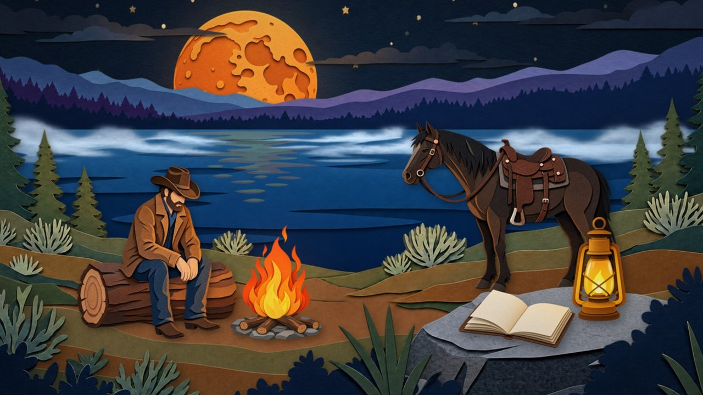

I build these for my own productions. Simple, fast, made for people who make videos. Free to download and use. No payment or licence key needed.

The real app window: see a screenshot
Making a tutorial? Press F9, do your task, press F9 again. Every click, key and file you touched becomes a clean narration script, plus timed subtitles.
Made by a VFX supervisor. Want it done for you? See packages.
Example keyframe looks (painted with AI, not Style Track output). You paint or bring one keyframe like these; Style Track learns it and paints every frame of your video.
Turn video footage into a painted film: oil, watercolour, anime, sketch, your own style. Paint one or two keyframes the way you like, and Style Track learns your look and paints every frame, keeping the strokes stuck to the moving subject.
Made by a VFX supervisor. Want it done for you? See packages.
Real demo, recorded in Painting Studio v1 with my own photographs: it finds what is near and far, cuts the people out, fills the space behind them, and you move the camera through it.
Turn still pictures (photographs, paintings, AI art) into living, moving shots. Real depth, layered parallax camera moves, light, weather, film looks and transitions, rendered straight to MP4 for your edit.
Made by a VFX supervisor. Want it done for you? See packages.

One of my paper-cut scenes: open its layers in Paper Cut Studio and make the fire flicker, the moon glow and the camera push in.
Animate layered paper-cut art with a live preview and simple sliders: layers float, sway, flicker and glow, the camera pushes in, snow falls. Or type what you want: "moon rises slowly, fire flickers, slow push in".
Made by a VFX supervisor. Want it done for you? See packages.
Pay by UPI to pa1.potluri@okaxis, then email the payment screenshot to pa1.potluri@gmail.com. Include your chosen package and what you would like made.